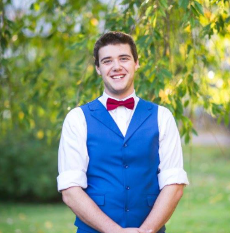

Hi there! My name is Colby Boettcher. I am 27 years old, and an aspiring, mostly self-taught developer located in the beautiful Okanagan Valley! I have a beautiful wife, and daughter, who are my whole world. I have been teaching myself programming for about 2 years now using online resources, such as Udemy, and I am currently enrolled in a Software Development Couse offered by Focus College. I hope this will allow me to break through into a new career in Software Development! The main reason that I would love to pursue a programming career is because I love a challenge. In the career field I am currently in, I do not feel as though I am being challenged, and this causes restlessness! Programming offers a change to be mentally stimulated with new problems every day! Something else that draws me to development is that the field is ever changing. As a developer you must be willing to embrace and learn new technologies; which is very appealing to me! Even though programming is a passion and hobby of mine, there are other things that I enjoy to do in my free time. Some of these things include Leather Working, Spending time with my family, and enjoying the great outdoor! Find more information about my Interests by clicking here!

Colby Boettcher
Hi there! My name is Colby Boettcher, and I am a aspiring developer. Programming is more than just a career choice, its my passion!